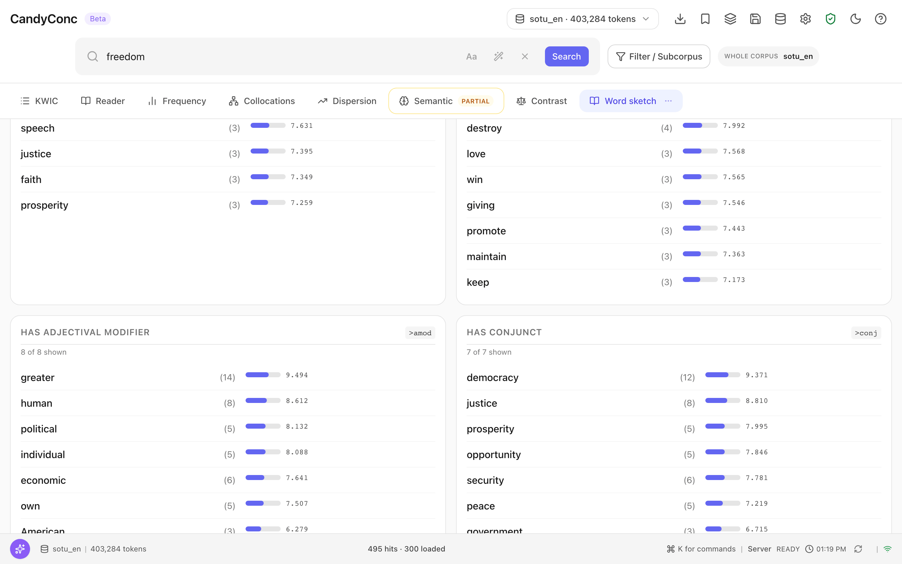

Make a word sketch#
A word sketch lists the collocates of a word by grammatical relation: the adjectives that modify it, the verbs that take it as object, the words it is coordinated with, and so on. It uses the dependency relations of the corpus. This guide makes a word sketch, compares two words, and finds the lines behind a pair.
Before you begin#
A corpus with dependency relations. A corpus imported with a trained pipeline has them by default. See Choose language and annotation layers. Without them, Word sketch in the menu More is disabled with the reason Word sketch needs corpus data that the active corpus does not provide: token attribute rel.
Make a word sketch#
Search for the word, for example
freedom.Click More in the tab bar.
Choose Word sketch.
The view shows Word sketch for: freedom and one table for each relation in which the word occurs. Each row names a word, the number of pairs in parentheses, and the logDice score of the pair. For freedom in the English sample corpus:
Table |
First rows |
|---|---|
HAS ADJECTIVAL MODIFIER |
greater (14), human (8), political (5) |
DIRECT OBJECT OF |
defend (12), destroy (4), love (3) |
HAS CONJUNCT |
democracy (12), justice (8), prosperity (5) |
Each relation displays up to 50 partners, ranked by logDice. The default minimum pair frequency is 3. The table header reports how many qualifying partners are shown and whether the list is capped.
Each table is headed by a gloss of the dependency relation and, next to it,
the relation as it is written in the dependency search. >amod means that
the searched word is the head and the listed words are its dependents.
<dobj means that the searched word is the dependent: DIRECT OBJECT OF
lists the verbs that have freedom as their direct object.


The tables carry the glosses of the relations: HAS ADJECTIVAL MODIFIER is amod, HAS CONJUNCT is conj. Each row gives the pair count in parentheses and the logDice score.#
Compare two words#
At the top of the view, click Compare.
In the field Comparison word…, enter the second word, for example
liberty.Click Compare.
The view shows Sketch comparison: freedom vs. liberty. For each
relation it lists the collocates the two words share, with both counts and
scores, and the collocates of each word alone (ONLY FREEDOM,
ONLY LIBERTY). In the relation HAS CONJUNCT, both words are coordinated with
justice, only freedom with democracy, and only liberty with
pursuit. A word under ONLY FREEDOM or ONLY LIBERTY, and a count in
the shared table, opens the lines of its pair like a row of the single word
sketch (see below): pursuit under ONLY LIBERTY opens
[word=liberty] >conj [word=pursuit] with 4 hits.
The comparison classifies partners using both complete tables after the minimum pair frequency filter (default 3). It then displays Top 30 per group and relation: shared partners by absolute score difference, and partners of one word alone by their score. A partner ranked below 30 in one profile can therefore still appear in the shared group.
Click Analyze to return to the single word sketch.
Open the lines behind a pair#
Click a row, or move to it with Tab and press Enter. The concordance opens with the dependency search of the pair in the search bar, in the scope of the word sketch:
Row |
Search in the search bar |
Hits |
|---|---|---|
defend in DIRECT OBJECT OF |
|
12 |
political in HAS ADJECTIVAL MODIFIER |
|
5 |
HEAD >relation DEPENDENT finds the head, so for a relation shown with <
the partner comes first. [word=...] without quotation marks matches
the exact spelling, as the word sketch does. The line above the concordance
names the row, for example From the word sketch: freedom · has adjectival
modifier · political, 5 pairs. See
Query language.
The word sketch counts pairs of a head and a dependent, and the concordance
shows one line per head. A head with two dependents of the same word in the
relation is two pairs and one line. In the word sketch of of, the row
members under prep_rev counts 53 pairs, and its concordance shows 51
lines, because the parser attached both of in members of Congress of both
parties to members, and that phrase occurs twice. The line above the
concordance then names both numbers: 51 lines for 53 pairs.
A partner with an apostrophe, such as n't, is searched as a plain word, which ignores case. A partner with a square bracket or a double quotation mark, and the rows of a word sketch for a query in the query language, have no link. If the scope has changed since the word sketch was computed, CandyConc asks you to analyze again first.
Export or save#
CSV saves the tables, and Save stores the settings as a saved analysis.
Result#
You have the grammatical profile of a word and the lines behind each pair. How word sketches are counted and how they differ from the word sketches of Sketch Engine is described in Word sketches.